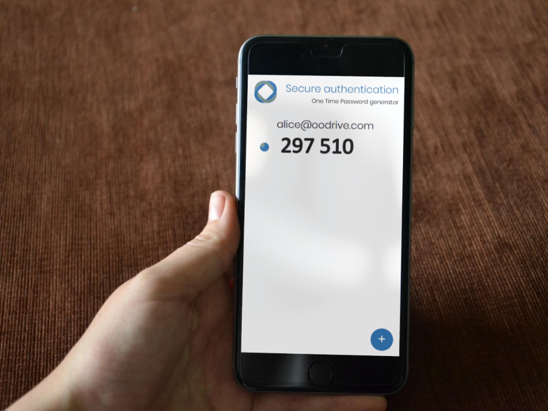
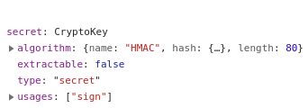
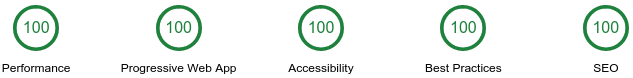

combines Web standards to create pages that provide rich mobile experience
Two-Factor Authentication mechanism based on time & shared secret
evaluates new technologies & tools

CryptoKey are opaque! 
Google quality audit 😄
